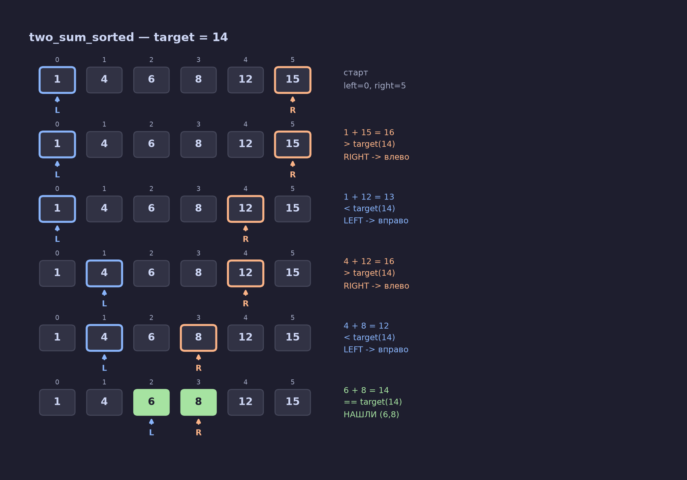
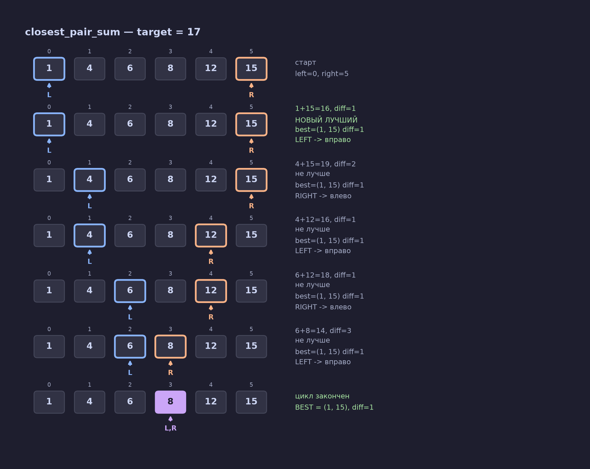
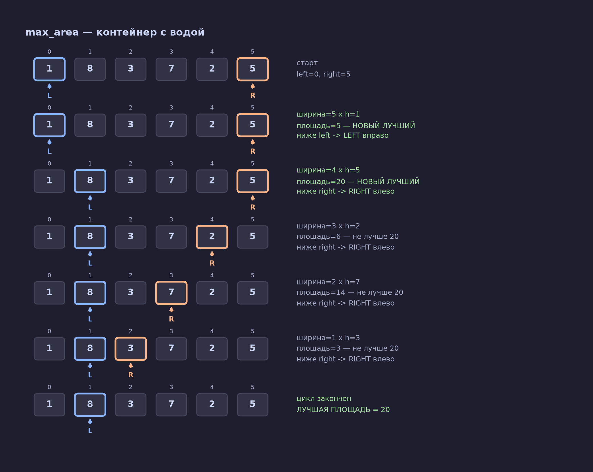
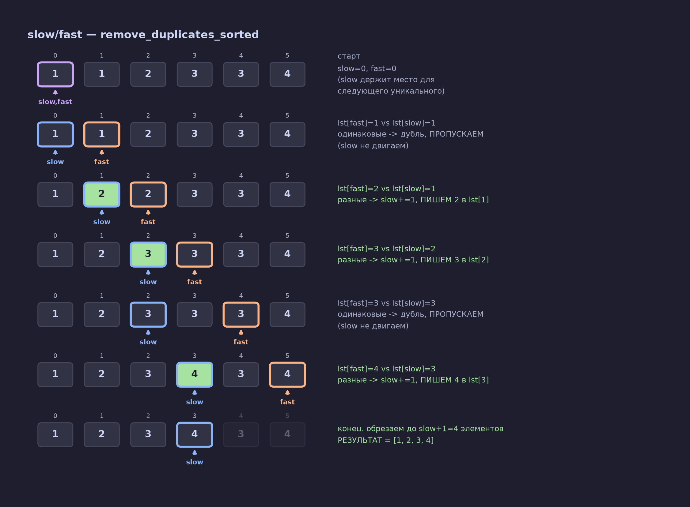
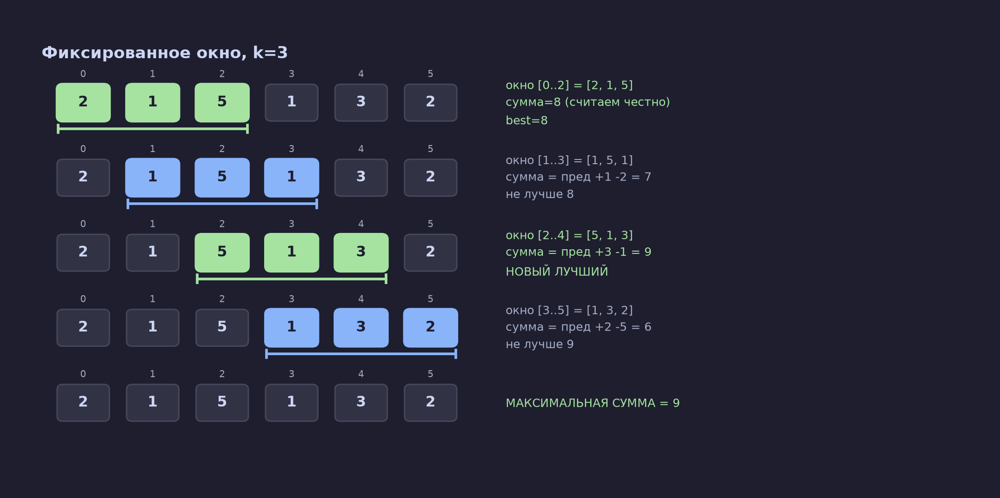
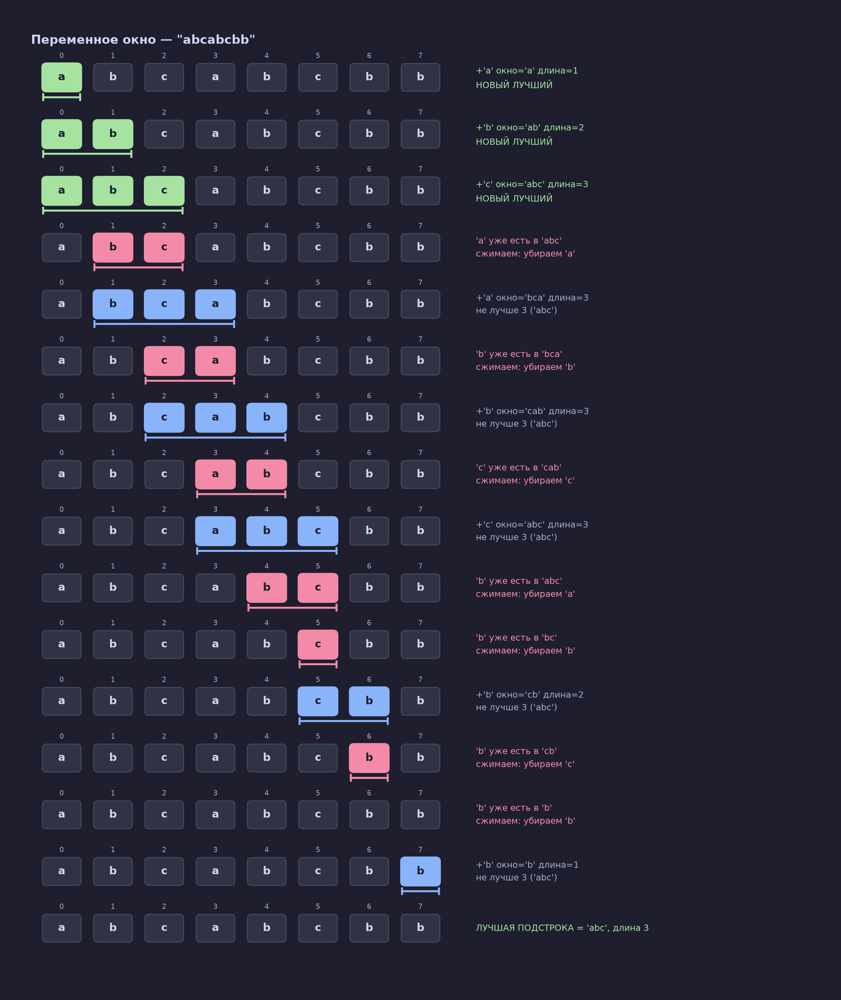

Модуль 5 — Two Pointers и Sliding Window на пальцах
Конспект обновлён 2026-08-17
Зачем эта заметка
Первая версия не зашла — таблицы и ASCII в код-блоках всё ещё читались как текст, не как картинка. Здесь для каждого примера — настоящее изображение: массив нарисован как ряд блоков, указатели — стрелки под ними, цвет показывает, что происходит на шаге (синий = left, персиковый = right, зелёный = нашли/новый лучший результат, серый = не нашли). Все шаги на картинках посчитаны кодом, не нарисованы на глаз.
Правило: не двигайся дальше следующего раздела, пока не сможешь объяснить его вслух своими словами, глядя на картинку.
ЧАСТЬ 1 — Two Pointers
Образ
Отсортированная шеренга людей по росту. Ты встал слева (у самого низкого), друг встал справа (у самого высокого). Вы идёте навстречу друг другу. На каждом шаге у вас есть два человека — по одному с каждого конца — и вы решаете: эта пара подходит, или кому-то сделать шаг внутрь.
Это работает только на отсортированных данных — только тогда шаг "внутрь" даёт предсказуемый результат: число становится больше или меньше в известную сторону.
Пример 1 — найти пару с суммой = target
Массив [1, 4, 6, 8, 12, 15], ищем два числа с суммой target = 14.

Смотри на картинку сверху вниз: L (синяя стрелка) и R (персиковая стрелка) сходятся друг к другу зигзагом — то R шагает влево, то L шагает вправо — пока не встретились на паре (6, 8), подсвеченной зелёным.
Почему это вообще можно — доказательство на пальцах
На первом шаге сумма 1+15=16 больше 14. Есть выбор: подвинуть left вправо (число вырастет — станет ещё хуже) или right влево (число упадёт). Раз уже много — двигать left бессмысленно, будет ещё больше. Остаётся только right.
А если бы вместо этого ты проверил все пары, начиная с left=0? Как только сумма 1 + x превысила 14 при каком-то x — для всех чисел ПОСЛЕ x (они ещё больше, массив отсортирован) сумма тоже будет больше 14. Проверять их бессмысленно, ответ там гарантированно "нет". Two pointers просто не тратит на них время.
Общее правило движения (для задач "сумма против target"):
flowchart TD
A["сумма = число[left] + число[right]"] --> B{"сравни с target"}
B -->|"сумма меньше target"| C["двигай LEFT вправо<br/>(нужно число побольше)"]
B -->|"сумма больше target"| D["двигай RIGHT влево<br/>(нужно число поменьше)"]
B -->|"сумма равна target"| E["нашли — возвращай"]
Пример 2 — не просто найти, а найти ЛУЧШУЮ пару (closest_pair_sum)
Тот же массив, но теперь target = 17, и точного совпадения может не быть — нужна пара, сумма которой ближе всего.
Механика движения (левее/правее) не меняется. Добавляется только одно: на каждом шаге, до сдвига указателей, спрашиваешь — "а эта пара ближе к target, чем лучшая, что я уже видел?"

Три пары дали одинаковую разницу diff=1 — (1,15), (4,12), (6,12) (на картинке видно, что зелёным подсвечен только самый первый шаг, дальше текст серый — "не лучше", хотя diff у них тот же). Побеждает та, что найдена первой, потому что правило было "строго меньше" (<), а не "меньше или равно". Это не баг — при равенстве не важно, какую из одинаково хороших пар вернуть.
Последняя строка на картинке — фиолетовая рамка L,R — это момент, когда указатели встретились на одной ячейке и цикл закончился.
Главный вывод: closest_pair_sum — это two_sum_sorted плюс одна переменная-память (best) и одна проверка на каждом шаге. Руль движения указателей — тот же самый.
Пример 3 — другое правило движения (max_area / контейнер с водой)
Важно увидеть: правило "сумма < target → left вправо" — это правило конкретно для задач про сумму, не универсальный закон two pointers. Сама идея (два указателя сходятся с концов, откидывая заведомо бесполезные варианты) — общая, а вот что именно заставляет двигать тот или иной указатель — каждый раз выводится из условия задачи заново.
Задача: heights = [1, 8, 3, 7, 2, 5] — высоты вертикальных стен. Площадь между двумя стенами = min(высота_left, высота_right) × расстояние. Нужна максимальная площадь. Здесь нет target — есть только "хочу площадь побольше".

Почему на каждом шаге двигаем именно низкую стену? Если сдвинуть высокую — ширина всё равно уменьшится, а высота ограничена всё равно низкой стеной с другой стороны — результат гарантированно не станет лучше, может стать только хуже. А подвинув низкую стену — теряем ту же ширину, но получаем шанс: вдруг следующая стена окажется выше, и площадь всё-таки вырастет.
Обрати внимание на картинке: после шага 2 (площадь 20, стена 8 на индексе 1 стала левой границей) ни одна следующая попытка не была лучше — 6, 14, 3. Это не совпадение: раз слева стоит стена 8, а сравнивать её больше не с чем более высоким справа — 20 действительно максимум.
flowchart TD
A["сравни высоты heights[left] и heights[right]"] --> B{"какая ниже?"}
B -->|"left ниже или равна"| C["двигай LEFT вправо"]
B -->|"right ниже"| D["двигай RIGHT влево"]
Сравни этот флоучарт с флоучартом из Примера 1 — форма (два указателя, сравнение, сдвиг одного из них) одна и та же, но условие внутри ромба — другое. Вот что значит "тот же скелет, разное правило".
Другой под-паттерн — slow/fast (указатели идут в одну сторону)
Не все two pointers сходятся с разных концов. Второй вариант: оба указателя идут в одну сторону, но с разными ролями.
Образ: сортируешь бельё. fast — рука, которая быстро перебирает всю кучу, вещь за вещью. slow — рука, которая держит место, куда положить следующую нужную вещь. fast бежит по всему, slow продвигается только когда fast нашёл то, что стоит оставить.
Задача: убрать дубли из отсортированного [1, 1, 2, 3, 3, 4], не создавая новый список.

Читай картинку так: синяя стрелка slow — где сейчас граница "уже чистого" куска списка. Персиковая fast — что читаем прямо сейчас. Когда lst[fast] совпадает с lst[slow] (дубль) — просто идём дальше, slow стоит на месте (серые строки). Когда lst[fast] отличается — нашли новое уникальное значение: slow сдвигается на 1 и туда записывается значение из fast (зелёная подсветка — это и есть момент записи).
В последней строке видно результат: ячейки после slow (значения 3 и 4 на местах 4 и 5) — потускневшие, это "мусор", который остался от старых данных и обрезается. Настоящий ответ — только [1, 2, 3, 4].
Ключевая деталь: fast всегда впереди или наравне со slow, поэтому когда slow что-то перезаписывает — эта ячейка уже прочитана fast, ничего не теряется.
Когда two pointers "с концов" НЕ подходит
Важно не только "как", но и "когда НЕ". Пример: найти пару чисел с минимальной разностью (не суммой!) в отсортированном списке.
Тут сходящиеся с концов указатели вообще не нужны — потому что в отсортированном списке минимальная разность всегда между соседними элементами. Хватает одного прохода: сравнить каждый элемент со следующим, без всякого сведения с двух концов.
Это ровно та ошибка, в которую легко попасть, если помнить паттерн как шаблон "left/right с разных концов", а не понимать, почему он вообще работает: не любая задача про пару чисел решается им.
Проверка понимания — Часть 1
- Почему two pointers "с концов" требует отсортированных данных?
- В Примере 1: сумма меньше target — какой указатель двигаем и почему именно его?
- Одним предложением: чем
closest_pair_sum(Пример 2) отличается отtwo_sum_sorted(Пример 1) по логике? - В Примере 3 (стены) — почему нельзя было просто скопировать правило "сумма < target → left вправо" из Примера 1?
- Почему для "минимальная разность в отсортированном списке" двух указателей с концов не нужно?
Если на все 5 ответил уверенно вслух — двигайся в Часть 2.
ЧАСТЬ 2 — Sliding Window
Образ
Гусеница на ветке: хвост (left) и голова (right). Голова тянется вперёд, исследует новое. Хвост подтягивается следом, когда нужно что-то "отпустить". Между ними — окно, видимое целиком.
Смысл тот же, что в two pointers: не пересчитывать всё с нуля на каждом шаге, а обновлять уже посчитанное, добавляя новое и убирая старое.
Окно фиксированного размера
Задача: максимальная сумма любых k=3 подряд идущих чисел в [2, 1, 5, 1, 3, 2].

Каждое число вошло в сумму и вышло из неё ровно один раз за весь проход (не пересчитываем окно с нуля — только +новое −старое) — это и есть O(n), а не пересчёт k чисел заново на каждом шаге (было бы O(n·k)).
Окно переменного размера
Задача сложнее: размер окна заранее не известен, зависит от условия. Найти самую длинную подстроку без повторяющихся символов в "abcabcbb".
Тут голова (right) всегда лезет вперёд (синие/зелёные строки на картинке). Хвост (left) подтягивается только когда условие нарушено — в окне появился повтор (розовые строки) — и ровно до момента, когда условие снова станет верным.

Главное отличие от фиксированного окна — смотри на шаг с 'b' на индексе 6: розовых строк подряд две, значит left сдвинулся не на одну позицию, а на две за один шаг right. Сжатие идёт while, а не if, — пока условие не восстановится, может понадобиться не один сдвиг.
Итог: самая длинная подстрока без повторов — "abc", длина 3.
Проверка понимания — Часть 2
- В окне фиксированного размера — почему не пересчитываем сумму всех
kэлементов заново на каждом шаге? - В окне переменного размера — при каком условии двигается
left? - На картинке найди место, где
leftсдвинулся больше чем на 1 шаг за одну итерациюright. Сколько раз это происходит во всём примере? - Чем код "фиксированного окна" отличается от кода "переменного окна"?
Связка
Two pointers и sliding window — родственники: оба избегают вложенного перебора за счёт того, что не начинают счёт заново, а обновляют то, что уже знают, добавляя/убирая по одному элементу. Two pointers — два индекса, которые либо сходятся с концов (Примеры 1-3), либо идут в одну сторону с разной скоростью (slow/fast). Sliding window — частный случай "в одну сторону", где между указателями всегда лежит непрерывный кусок ("окно"), а не просто позиция.
Что делать дальше
- Прочитай заметку целиком один раз, глядя на картинки, а не пробегая мимо них
- Ответь вслух на все вопросы из "Проверки понимания" в обеих частях
- Открой
python_course/drills/05_patterns/—p1_two_pointers.py,p2_sliding_window.py,p3_mastery_check.py - Реши без интернета. Где завис — вернись к соответствующей картинке здесь, не гугли